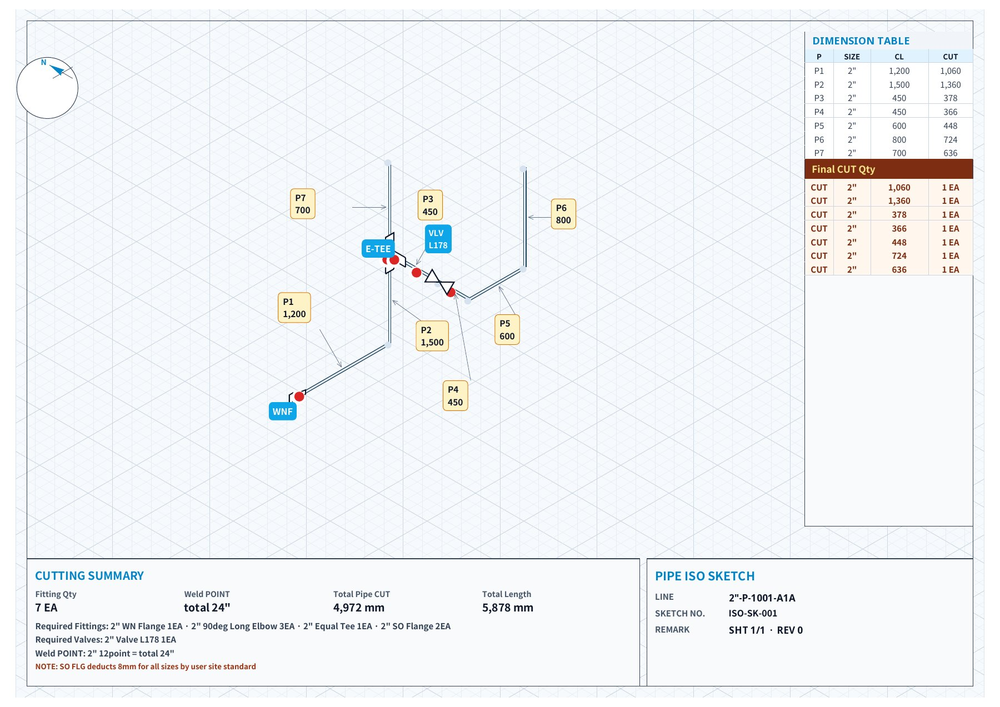

배관 아이소 도면 · 현장 기초
배관 아이소 도면 보는 법
배관 아이소(ISO) 도면은 아이소메트릭, 등각투상도라고도 부르는 배관 제작·설치용 도면입니다. 처음 보면 선과 숫자가 복잡해 보이지만, 읽는 순서만 정해 두면 어느 현장 도면이든 같은 방법으로 볼 수 있습니다. 현장에서 배관 일을 하면서 정리한 순서와 기호를 소개합니다.
코리아피터 · 2026년 11월 12일 작성. 도면 양식과 기호는 발주처·설계사마다 조금씩 다르므로, 해당 프로젝트의 범례(Legend)와 사양을 우선합니다.
1. 배관 아이소 도면이란
평면도나 입면도는 한 방향에서 본 그림이라 배관이 위로 올라가고 옆으로 꺾이는 모습을 한 장에 담기 어렵습니다. 아이소 도면은 동서·남북·상하 세 방향을 30° 기울인 축으로 함께 그려서, 배관 한 라인이 어디서 시작해 어떻게 꺾여 어디로 가는지를 한 장에 보여 줍니다.
가장 중요한 특징은 축척이 맞지 않는다는 점입니다. 짧게 그려진 구간이 실제로는 더 길 수 있으므로 길이는 항상 적힌 숫자로 판단합니다.

2. 표제란과 라인번호부터 확인합니다
도면 오른쪽 아래의 표제란에서 이 도면이 어떤 배관인지 먼저 확인합니다. 라인번호는 보통 사이즈-유체(서비스)-번호-배관사양 형태입니다. 예를 들어 2"-P-1001-A1A라면 2인치, 공정(P) 라인 1001번, A1A 사양이라는 뜻으로 읽습니다. 표기 규칙은 프로젝트마다 다르니 범례를 확인합니다.
- 시트 번호(SHT): 한 라인이 여러 장으로 나뉘면 1/3, 2/3처럼 표시됩니다. 연결되는 다른 장은 "CONT. ON SHT 2" 같은 문구로 이어집니다.
- 리비전(REV): 반드시 최신 리비전인지 확인합니다. 구판으로 자르면 그대로 재작업입니다.
- 배관사양: 재질, 압력 등급, 두께(스케줄)가 여기서 정해집니다.
3. 북쪽 방향과 세 개의 축을 잡습니다
도면 한쪽에 있는 북쪽(N) 화살표가 기준입니다. 아이소 도면의 수평 배관은 30° 기울어진 두 축(동서, 남북) 중 하나를 따라 그려지고, 수직 배관은 위아래 세로선으로 그려집니다.
현장에서 도면을 볼 때는 도면의 N 방향을 실제 플랜트의 북쪽에 맞춰 놓고 보면, 배관이 어느 쪽으로 가는지 훨씬 빨리 머릿속에 들어옵니다.
4. 치수(CL)와 높이(EL)를 읽습니다
도면 치수는 대부분 센터 치수(CL)입니다. 엘보나 티 같은 피팅의 중심점부터 다음 중심점까지의 길이라서, 이 숫자가 곧 파이프를 자르는 길이는 아닙니다.
| 표기 | 뜻 |
|---|---|
| CL (센터) | 피팅 중심에서 중심까지 길이. 절단 길이를 구하는 출발점 |
| EL+2,500 | 기준면에서 배관 중심까지의 높이(엘리베이션) |
| BOP / TOP | 배관 바닥(Bottom of Pipe)·윗면(Top of Pipe) 기준 높이 |
| E / N 좌표 | 플랜트 좌표로 위치를 표시할 때 사용 |
실제 절단 길이(CUT)는 CL에서 피팅 치수(예: 엘보의 중심~끝 길이)와 용접 갭을 빼서 구합니다. 자세한 계산은 배관 절단 길이 계산·CL과 CUT에 정리했습니다.
5. 피팅·밸브 기호를 확인합니다
| 기호 모양 | 의미 |
|---|---|
| 선이 꺾이는 점 | 엘보(90°·45°). 각도와 LR/SR 여부는 BOM이나 표기로 확인 |
| 선이 갈라지는 점 | 티(TEE). 같은 사이즈면 이퀄, 가지가 작으면 레듀싱 티 |
| 사다리꼴·삼각형 | 레듀샤. CON(동심) / ECC(편심), 편심은 FOT·FOB로 평평한 면 방향 표시 |
| 배관에 수직인 짧은 두 줄 | 플랜지 연결(개스킷·볼트 포함) |
| 맞붙은 삼각형 두 개(나비 모양) | 밸브. 옆에 GATE, GLOBE, BALL, CHECK 등 종류 표기 |
| PS-, SP- 표기 | 서포트 위치와 번호 |
6. 숍 용접과 필드 용접(FW)을 구분합니다
배관 선 위의 검은 점(●)은 보통 숍(공장) 용접 위치입니다. FW(Field Weld)는 현장에서 잇는 용접 위치로, 스풀을 나누는 경계가 됩니다.
- 스풀 번호(SP-1, SP-2…)로 공장 제작 단위를 나눕니다.
- FW 쪽 파이프는 현장 맞춤을 위해 여유 길이를 두고 자르는 경우가 많습니다. 여유를 얼마나 둘지는 현장 기준을 따릅니다.
- 용접 번호는 검사(RT·PT) 기록과 연결되므로 도면 번호와 함께 관리합니다.
7. 경사 배관과 빗금(해칭) 표시를 봅니다
세 축과 평행하지 않은 배관, 즉 비스듬히 꺾인 옵셋 구간은 빗금 친 삼각형으로 표시합니다. 빗금이 수평면에 있으면 평면상에서 비틀어진 것이고, 수직면에 있으면 위아래로 기울어진 것입니다. 두 방향이 섞인 구간이 롤링 옵셋입니다.
옵셋 구간의 실제 길이는 두 방향 치수로 계산합니다. 방법은 45도 옵셋·롤링 옵셋 계산에서 볼 수 있습니다.
8. BOM(자재 목록)과 그림을 대조합니다
도면 옆의 BOM에는 파이프 길이 합계, 엘보·티·레듀샤·플랜지·개스킷·볼트·밸브의 사양과 수량이 들어 있습니다. 그림에서 센 피팅 개수와 BOM 수량이 맞는지 확인하면, 놓친 피팅이나 잘못 읽은 기호를 미리 잡을 수 있습니다.
9. 한 장을 읽는 순서 정리
- 표제란: 라인번호, 사이즈, 배관사양, 시트, 최신 리비전
- 북쪽(N) 화살표로 방향 잡기
- 시작점(노즐, 다른 라인 연결, CONT.)을 찾고 흐름 방향으로 따라가기
- 구간마다 CL 치수와 EL 확인
- 피팅·밸브 기호와 종류 확인
- 숍 용접(●), 필드 용접(FW), 스풀 경계 표시
- BOM과 수량 대조
- CL에서 피팅 공제해 CUT 계산
마지막 단계인 CUT 계산과 커팅 리스트 정리는 손으로 하면 실수가 잦은 부분입니다. 저는 이 과정을 폰에서 하려고 현장 배관 ISO 계산기 앱을 만들었습니다. 아이소를 스케치하고 CL을 넣으면 피팅을 빼고 구간별 CUT와 커팅 리스트를 정리해 주고, PDF·DXF로 내보낼 수 있습니다.
배관 아이소 도면 자주 묻는 질문
배관 아이소 도면은 축척대로 그려져 있나요?
아니요. 아이소 도면은 경로와 연결 관계를 보여주는 그림이고 축척이 맞지 않습니다. 길이는 반드시 적힌 치수로 판단합니다.
도면 치수가 바로 절단 길이인가요?
보통 도면 치수는 피팅 중심 기준의 센터 치수(CL)입니다. 절단 길이(CUT)는 피팅 치수와 용접 갭을 빼서 구합니다.
FW는 무슨 뜻인가요?
Field Weld, 현장 용접 위치입니다. 공장에서 만든 스풀을 현장에서 이어 붙이는 곳이라 맞춤을 위해 여유를 두는 경우가 많습니다.